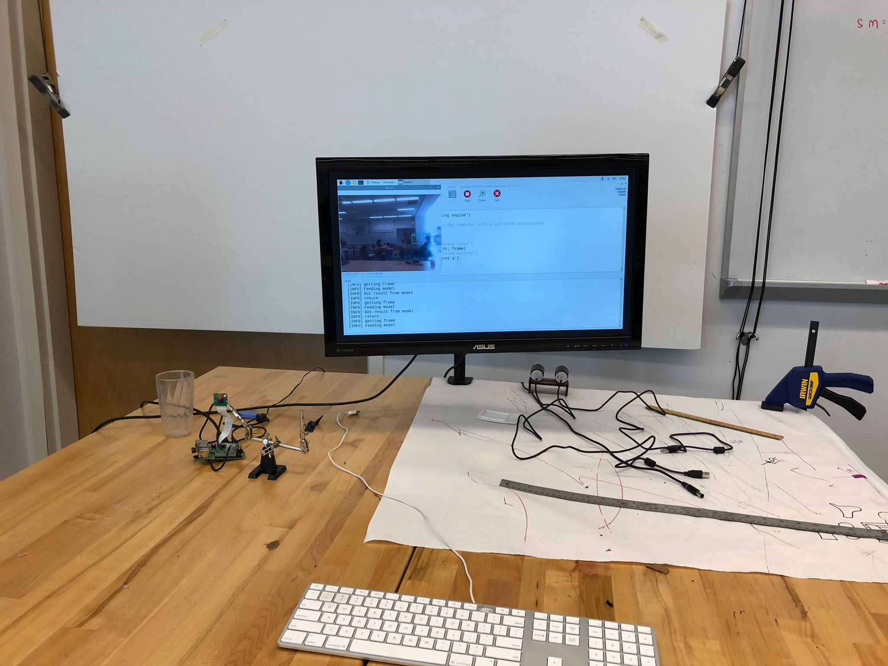
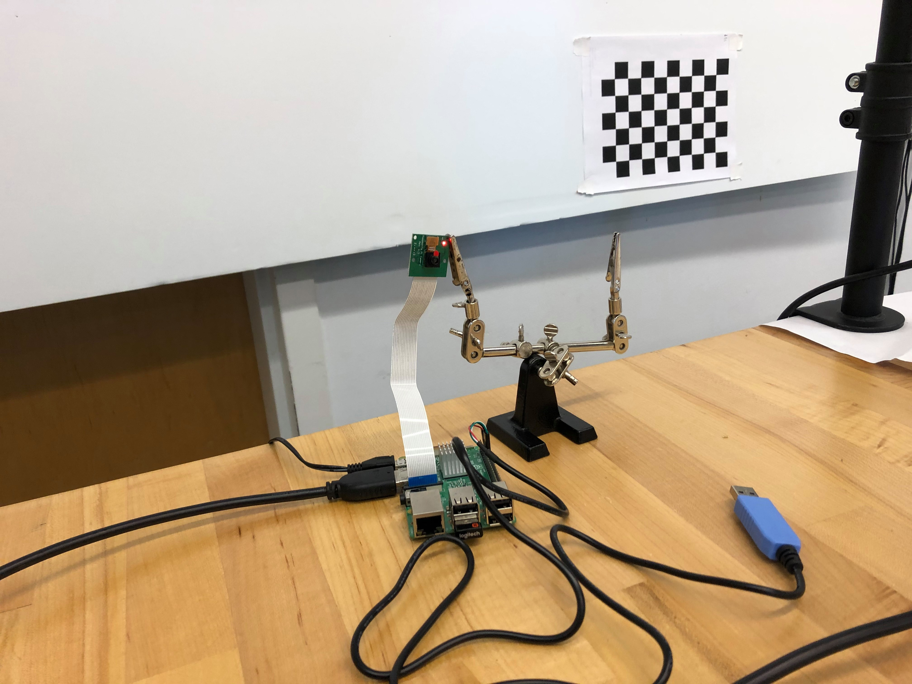

Nov 03, 2019
Leg and CV!
Goals
- Figure out the rest of the CV situation
- Figure out the chassis and leg situation
What Did We Get Done
- We fixed the issue with the CV crashing the raspberry pi. We realized that this was due to a power supply issue where the previous brick was only supplying the raspi with 0.7A of current where we really actually needed 2.5 to 3 A of current. This was a big win. We now have proof of concept that the raspberry pi can detect people in it's field of vision.
- With the legs, we finished cadding them and decided on what the chassis would look like for this sprint.
- Yesterday, we went to the thrift store and bought potential skins.

